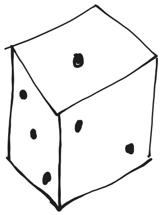
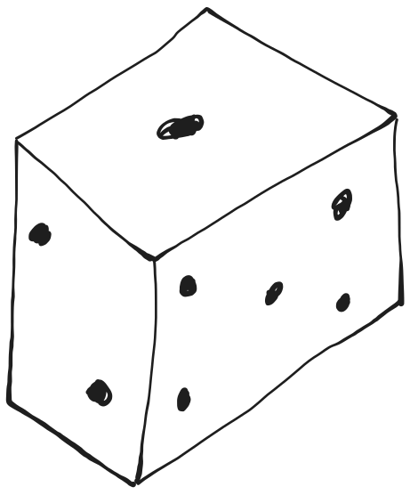

The science of debugging
PyData Amsterdam · September 20, 2024
About me
- ML engineer at

- Maintainer of

 @SdgJlbl
@SdgJlbl
What does an ML engineer do?
- Productionizing research code
- Implementing tooling to facilitate data scientist job
- Debugging
Everyone is debugging

There is a logical explanation to bugs.
Approaching debugging as
an experimental science
Experimental science = theory + experiments

Don't try to fix your bug
Understand what happens
Drawing your map

Drawing your map
You have assumptions about how your code is working
Make them explicit
Focus on the most obvious at first
Drawing your map
Divide and conquer
Drawing your map
Use documentation and architecture diagrams
But don't trust them
Using your map
Make some hypotheses about what is happening during the bug

Using your map
Follow the flow
Wrapping up
Remember: at least one of your assumptions is wrong
Finding your way

Finding your way
Designing and recording experiments:
What is actually happening when you run your code
Finding your way
Experiments are used to test your hypotheses
Finding your way
Be systematic
Trust nothing
Check everything
Finding your way
Inspect values at interfaces.
Finding your way
Focus on data, not the code flow.
Wrapping up
It's all about putting your theory to the test.
Keeping track of your progress

How?
Scientists use a research log
Debugging log
- Write down experiment settings and results
- Write down your assumptions and hypotheses explicitly
- Write down ideas you can't follow right now

Debugging log is great to write incident retrospectives
Let's apply this approach to a toy example.
I iterate on cumulative lists:
[0], [0, 1], [0, 1, 2], ...
I add a special value at the beginning of each list: -100
def prepend(l: list, beginning: list = [-100]):
beginning.extend(l)
return beginning
for i in range(5):
zero_to_i = list(range(i))
l = prepend(zero_to_i)
print(len(l))
def prepend(l: list, beginning: list = [-100]):
beginning.extend(l)
return beginning
for i in range(5):
zero_to_i = list(range(i))
l = prepend(zero_to_i)
print(len(l))
Expected: 5
zero_to_i = [0, 1, 2, 3]
l = [-100, 0, 1, 2, 3]
Observed: 11
Experiment 1
def prepend(l: list, beginning: list = [-100]):
beginning.extend(l)
return beginning
print(prepend([0, 1, 2]))
Hypothesis 1
prepend is adding -100 in front of the list.
[-100, 0, 1, 2]
Experiment 2
def prepend(l: list, beginning: list = [-100]):
beginning.extend(l)
return beginning
for i in range(5):
zero_to_i = list(range(i))
print(zero_to_i)
l = prepend(zero_to_i)
Hypothesis 2
Let's check the value of zero_to_i
[]
[0]
[0, 1]
[0, 1, 2]
[0, 1, 2, 3]
Experiment 3
def prepend(l: list, beginning: list = [-100]):
beginning.extend(l)
return beginning
for i in range(5):
zero_to_i = list(range(i))
l = prepend(zero_to_i)
print(l)
Hypothesis 3
Let's check the value of l
[-100]
[-100, 0]
[-100, 0, 0, 1]
[-100, 0, 0, 1, 0, 1, 2]
[-100, 0, 0, 1, 0, 1, 2, 0, 1, 2, 3]
Experiment 4
def prepend(l: list, beginning: list = [-100]):
beginning.extend(l)
return beginning
print(prepend([0, 1, 2]))
print(prepend([0, 1, 2]))
Hypothesis 4
prepend is always behaving in the same way.
1st print: [-100, 0, 1, 2]
2nd print: [-100, 0, 1, 2, 0, 1, 2]
Experiment 5
def prepend(l: list, beginning: list = [-100]):
print("l: ", l)
print("beginning: ", beginning)
beginning.extend(l)
return beginning
prepend([0, 1, 2])
prepend([0, 1, 2])
Hypothesis 5
Something is fishy when prepend is called multiple times.
l: [0, 1, 2]
beginning: [-100]
l: [0, 1, 2]
beginning: [-100, 0, 1, 2]
What is happening
- Default arguments are instantiated once.
- If a default argument is changed, the new value will be used as default for subsequent calls.
- beginning.extend(l)
- DO NOT use mutable default arguments.
Fixed code
def prepend(l: list, beginning: list | None = None):
if beginning is None:
beginning = [-100]
beginning.extend(l)
return beginning
for i in range(5):
zero_to_i = list(range(i))
l = prepend(zero_to_i)
Other useful tools for your adventure

 Qualify the bug
Qualify the bug
- What is the "bug"?
- Is it a "bug"?
- Is it reproducible?
Leverage temporality

When was the last it was working?
What changed in between?

Identify sources of randomness
Control what you can
Be mindful of what you don't
Invest in tooling
Learn how to use a debugger
Set up some monitoring
Enroll another adventurer
Debugging is a team effort
Architect your maze better
Write code easy to debug
The science of debugging in 3 principles
- There's a logical explanation.
- Understand what happens, do not fix the bug.
- Trust nothing, check all your assumptions.